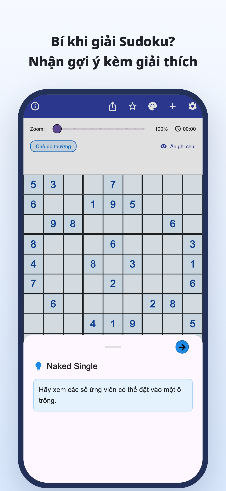
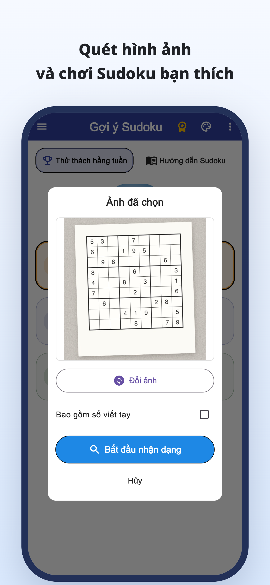
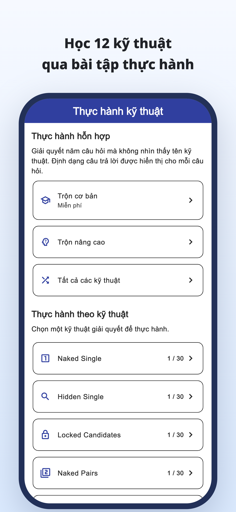
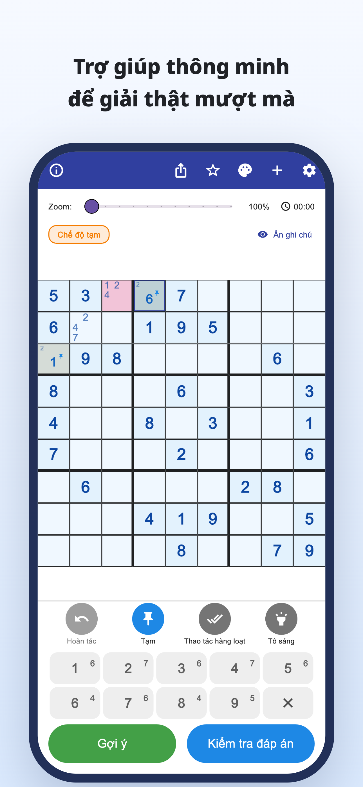
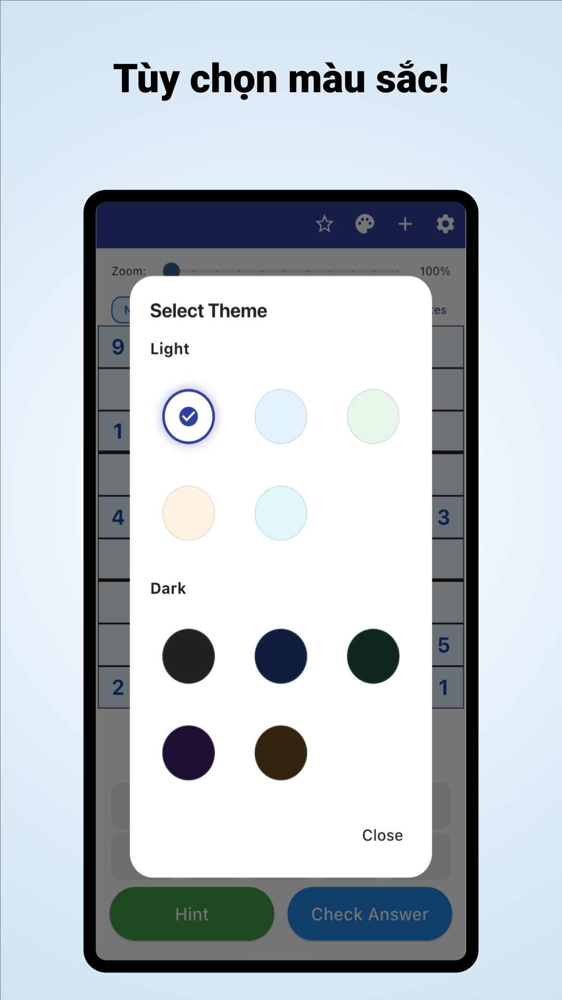

“Tiếp theo nên nhìn vào đâu?”
Bạn kiểm tra bảng hết lần này đến lần khác,
nhưng vẫn mắc ở cùng một chỗ.
Quét bằng máy ảnh · Gợi ý có giải thích
Quét câu đố từ báo và tạp chí.
Hiểu vì sao một số phù hợp, rồi tiếp tục tự giải.
iPhone và Android / Tải miễn phí · Mua trong ứng dụng





Bạn có gặp những lúc này không?
Bạn kiểm tra bảng hết lần này đến lần khác,
nhưng vẫn mắc ở cùng một chỗ.
Tại sao số đó lại nằm ở đây?
Chép lời giải thôi là chưa đủ.
Bạn muốn lấy Sudoku trên giấy đang giải
và tiếp tục trong ứng dụng.
Biến chỗ bế tắc thành một manh mối
Đọc Sudoku từ ảnh báo hoặc tạp chí, giảm việc nhập từng số bằng tay.
Đọc từ hình ảnhĐọc lập luận của một nước đi và dùng nó để nghĩ bước tiếp theo, thay vì chỉ điền đáp án.
Gợi ý có giải thíchXem giải thích và bài luyện cho từng kỹ thuật, rồi tập tự nhận ra chúng.
Luyện từng kỹ thuậtDành cho người thích tự tìm lời giải
Nhập câu đố quen thuộc và tiếp tục từ chỗ đang dở.
Hiểu lý do ở chỗ khó, rồi tự giải tiếp.
Cho người mới bắt đầu và người muốn học thêm kỹ thuật.
Đọc · Thử · Luyện tập
Bắt đầu ngay trên trình duyệt.
Đọc hướng dẫn hoặc chơi trọn một câu đố.
Từ ghi chú ứng viên đến giải thích kỹ thuật và bài luyện.
Thử giải đến cuối với gợi ý khi cần.
Khám phá luật chơi và niềm vui khi kết nối manh mối.
Nhìn ô có viền xanh và mở gợi ý.
Gợi ý bước tiếp theo
Kiểm tra ứng viên của một ô trống.
Đây là ví dụ trên web để thử một nước đi. Giao diện ứng dụng khác với ví dụ này.
Khi bạn bí Sudoku.
Tải Gợi ý Sudoku
Tải miễn phí · Mua trong ứng dụng
Ứng dụng được tải và dùng thử miễn phí. Gợi ý, kiểm tra đáp án và đọc ảnh có giới hạn lượt dùng; một số lượt cần xem quảng cáo video.
Premium là gói đăng ký tháng hoặc năm. Gói này bỏ quảng cáo và cho dùng gợi ý, kiểm tra đáp án không giới hạn. Việc đọc ảnh vẫn có giới hạn dù dùng Premium. Xem giá và điều kiện trong ứng dụng.
Nhập ảnh chụp Sudoku. Kiểm tra các số được nhận dạng và sửa lỗi trước khi bắt đầu. Hỗ trợ Sudoku chuẩn 9×9.
Bạn có thể chơi các câu đố có sẵn và dùng phần giải thích, luyện kỹ thuật. Một số câu đố và bài luyện cần Premium.
Ngoài bản minh họa một nước đi, bạn có thể chơi trọn một câu đố trên trình duyệt và xem hướng dẫn cùng bài luyện kỹ thuật.
Hướng dẫn sudoku